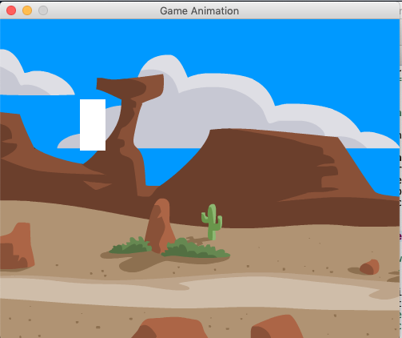
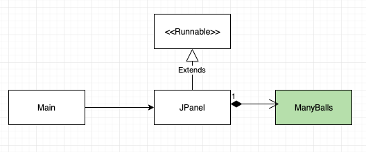
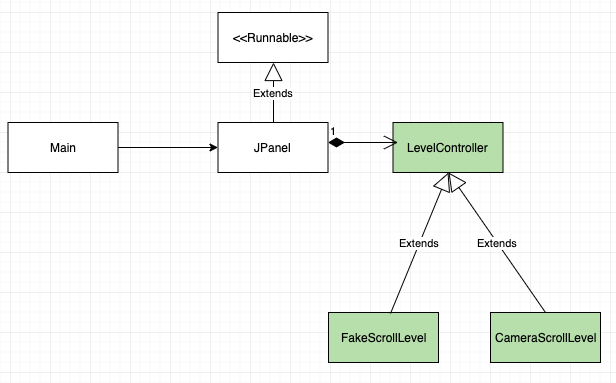
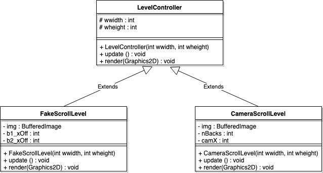
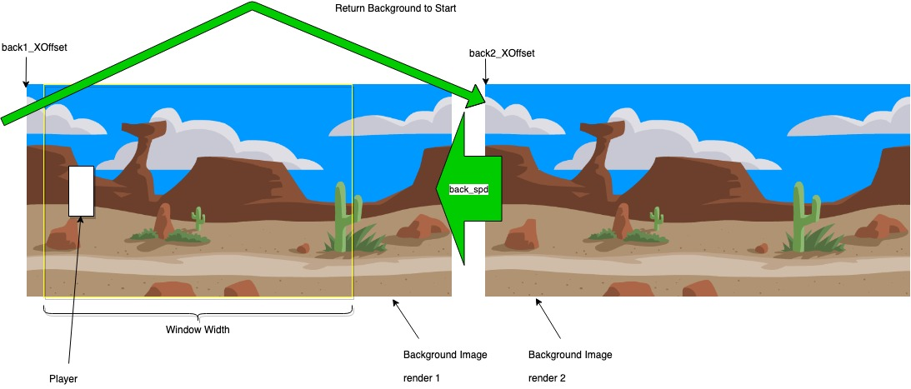
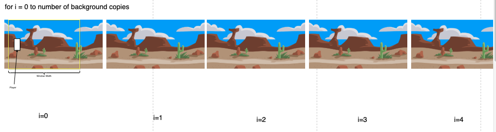

Back-
Grounds
Bienvenido a Blue-Labs Inc. Una compañia falsa del Instituto Tecnológico de Estudios Superiores de Monterrey Campus QRO que se dedica a desarrollar proyectos falsos relacionados a software de videojuegos!
Tu debes ser el nuevo recluta, no? El te estaba esperando pero ahorita esta ocupado en una reunión con un cliente exigente.
Por favor esperalo hasta pasar a la siguiente viñeta.
¡Raúl! ¿En dónde esta el nuevo trabajor y próximo Chief Technology Officer? Esta en frente de usted señor... Ah! Magnífico!
Que bueno que llegaste. El puesto de CTO va para ser tuyo pero primero tendrás que realizar unos cuantas tareas.
Comenzando por este que nos solicito el representante de Freev, una gigante tecnológica desarrolladora de millones de juegos. Desafortunadamente se especializan en desarrollo web por lo que nos estan pidiendo ayuda con la implementación de un sistema de fondos scrolleables para su próximo lanzamiento en computadora.
Task Information
A1-Background
Descripcion
'A1-Background' es un prototipo para probar ante el cliente diferentes técnicas para implementar 'background-scrolling' en un videojuego desarrollado en el lenguaje Java con un conecpto prototipo del jugador y una cantidad mínima de enemigos.
Se espera la entrega para el día: Miércoles 27 de Febrero del 2019
Estructura
Estructura de Partida
La estructura de donde partimos el proyecto es el esqueleto del juego desarrollado en las clases previas.
Estructura Nuevo
Remplazaremos el módulo ManyBalls por un diseño arquitectónico ya desarrollado aquí en BlueLabs
LevelController
La clase LevelController nos va a servir para agrupar 2 implementaciones diferentes de nuestro 'Background Scrolling' bajo un mismo concepto. De esta manera podemos declarar una variable de tipo LevelController en GamePanel para guardar la instancia de cualquiera de las 2 subclases, y así, hacer pruebas.

Paso 1: Empezar Proyecto
Prepara un proyecto con la estructura mencionada anteriormente. Para esto puedes hacer una copia de las clases pasadas como GamePanel y hacer las siguientes modificaciones:
- Remueve las clases ManyBalls y Ball.
- En GamePanel remueve las variable tipo ManyBalls y todo lo relacionado a ella.
- Crea una clase llamada LevelController con un método público void update() y un método público void render(Graphics2D g).
- Crea las 2 clases FakeScrollLevel y CameraScrollLevel que hereden de LevelController con las variables que se muestra en el UML y el los constructores llamando a super().
- En GamePanel crea una variable privada tipo LevelController llamado level. En el constructor de GamePanel asigna a level una nueva instancia de la clase FakeScrollLevel() pasando PWIDTH y PHEIGHT como parametros al constructor de FakeScrollLevel. En gameRender() ejecuta level.render((Graphics2D)dbg) después del pintado del fondo. En gameUpdate() ejecuta level.update().
Scrolling Backgrounds
Hacer un 'scrolling background' es dar la ilusión visual al jugador de un fondo en el videojuego que va avanzando. Este es un efecto muy poderoso en videojuegos ya que crea una sensación de movimiento espacial adentro del juego.
IMPORTANCIA: Si en un juego con un mundo virtual relativamente grande, (mayor a la pantalla), no se presenta este efecto, puede ocasionar que el jugador se pierda fácilmente ya que no tendrá un punto de referencia para ubicarse. También puede usarse para indicar progreso a través de los niveles dejando claro al jugador que esta haciendo lo correcto.
Veremos 2 maneras de implementar este efecto. La primera, probablemente familiar, consiste en simularlo dibujando 2 veces el fondo para crear un bucle. La segunda, dibujamos un mundo mucho más amplio que la pantalla, y hacemos que la 'cámara' de la pantalla se vaya moviendo en nuestro mundo.
Ambas técnicas tienen ventajas y deventajas que se verán a continuación.
Fake Scrolling
Como se muestra en la imagen, en esta técnica se dibuja 2 veces el fondo en diferentes posiciones. Llamemos a estas posiciones back1_x y back2_x. La idea es que la segunda imagen siempre esté por detrás de la primera, y de la misma forma, la primera esté por detrás de la segunda, mientras ambas avanzan con la misma velocidad. Esto crea un bucle infinito del fondo ya que cuando termina una imagen, la otra le sigue inmediatamente dando la ilusión que es el mismo fondo.
Fake Scrolling - Implementación
Para implementarlo usaremos las variables de la clase FakeScrollingLevel. Primero en el constructor tenemos que cargar nuestra imagen usando el metodo read() de ImageIO de la siguiente manera:
try {
img = (BufferedImage)ImageIO.read(
getClass().getClassLoader().getResource("./sback.png"));
} catch (IOException e) {
// TODO Auto-generated catch block
e.printStackTrace();
}
Después inicializamos nuestras variables b1_xOff=0 y b2_xOff=b1_xOff+img.getWidth(). Esto es para que el comienzo del segundo fondo este inmediatamente después del final del primero.
Fake Scrolling - Implementación
En render(Graphics2D g) sólo necesitamos dibujar 2 veces nuestro fondo usando el método drawImage(img, x, y, null) de Graphics. Aquí primero llamamos drawImage() con nuestra variable b1_xOff para x, y después llamamos de nuevo drawImage() pero con la variable b2_xOff en vez.
Por último, en update() primero movemos los offsets restandole a cada uno el valor de 5 para que se 'muevan' 5 pixeles a la izquierda. Después hay que checar si tenemos que colocar nuestro fondo en el comienzo de nuevo. Para esto en un if probamos si nuestro b1_xOff es menor o igual que - img.getWidth(), si se cumple la condición, entonces decimos que b1_xOff = img.getWidth(). Y hacemos un if similar para b2_xOff separado.
Ya con eso solo nos queda probar dandole click en 'Run'!
Fake Scrolling - Usos
Esta es una buena técnica para usar en juegos en donde los niveles son auto generados dinámicamente. Esto quiere decir que los elementos del juego como obstaculo o enemigos van 'apareciendo' a través del tiempo conforme el jugador juega. En este tipo de juegos los elementos generalmente no estan relacionados directamente con el fondo y su posición actual por lo que esta sencilla técnica, o alguna adaptación de ella, puede usarse sin problema. Además, es muy eficiente en cuanto a rendimiento ya que sólo tiene que siempre 2 copias del fondo.
Sin embargo, si se desea que el fondo se desplazca horizontal y verticalmente, puede ser más complicado de lo necesario. También si tienes un mapa grande bien definido con elementos estáticos o autónomos en varios puntos del mapa, tendrás que definir un sistema de coordenadas para que puedas renderizarlos trasladando sus posiciones respecto a donde se haya movido el jugador. Esto es mucha talacha en el código y además crea muchas dependencias innecesarias entre diferentes clases. Y recuerda que siempre hay que buscar reducir el acoplamiento entre clases para hacer más sencillo de entender y probar el software.
Camera Scrolling
Esta técnica consiste en dibujar todo el mundo completo tal como está y en donde está, y dejar más bien que la 'cámara' de la aplicación se mueva. De esta manera podemos por ejemplo dibujar multiples fondos fijos, uno después del otro, siempre en un mismo lugar.
En el juego primero se va a observar el primer fondo y conforme la camara vaya moviendo, se irán mostrando los siguientes o previos fondos.
Camera Scrolling - Implementación
Para implementarlo usaremos las variables de la clase CameraScrollingLevel. Primero en el constructor tenemos que cargar nuevamente nuestra imagen usando el metodo read() de ImageIO de la siguiente manera:
try {
img = (BufferedImage)ImageIO.read(
getClass().getClassLoader().getResource("./sback.png"));
} catch (IOException e) {
// TODO Auto-generated catch block
e.printStackTrace();
}
Después inicializamos nuestra variable de posición camX = 0. Y definimos la cantidad fondos que queremos repetir en nuestro mundo, por ejemplo nBacks = 8.
Camera Scrolling - Implementación
En render(Graphics2D g) ahora dibujaremos nuestra imagen dentro de un for i=0 a nBacks, y en cada iteración ejecutamos g.drawImage(img, i*img.getWidth(), 0, null); para se dibujen los 8 fondos cada uno después del previo.
Tambíen será necesario en render() simular nuestra camara y esto lo haremos con el método tanslate(x,y) de Graphics. Este método mueve todo el sistema de coordenadas que se utiliza para renderizar gráficos por lo que cuando hacemos g.translate(-camX, 0); es como si todo el plano se haya desplazado y el origen se ubique en camX.
Finalmente, en update() tenemos que mover hacia adelante nuestra cámara sumandole a camX el valor 5, para que se mueva 5 pixeles hacia en frente.
Ya con eso solo nos queda probar cambiando en GamePanel el tipo de LevelController creado de FakeScrollLevel a CameraScrollLevel y dandole click en 'Run'!
Camera Scrolling - Usos
Camera Scrolling es la contraparte de Fake Scrolling por lo que las ventajas de esta técnica cubren las desventajas de la anterior. Si se tiene un mundo o mapa extenso, con elementos en varios puntos del juego, se pueder renderizar todo el juego sin tomar en cuenta las ubicaciones de los elementos, ya que eventualmente la camara se moverá para renderizarlos en la pantalla. Por este motivo, esta técnica es la preferida cuando se hacen juegos de exploración o aventura o cualquier juego grande en 2D.
Desafortunadamente, hay un costo en rendimiento ya que se renderiza en cada momento TODO el juego completo y todos sus fondos. Esto puede hacer que tome un tiempo significativo si la cantidad de elementos es muy alta o el mapa y su fondo es muy grande. Se suele modificar para que solo se renderize aquello que esta dentro de los límites de la cámara, pero es implica una transformación grande a la estructura del proyecto, ya que se necesita implementar un Renderizador que sea selectivo y también una manera de búsqueda para retribuir en un tiempo eficiente los elementos del juego adentro de la vista de la cámara.
References and Resources
Links
Buena suerte!
Te deseo lo mejor